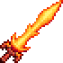
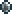

Вулкан
Характеристики
Тип Оружие Меч
Урон 40

Скорость 30 (Средняя)
Атак/сек 2
Крит. шанс 4%
Отбрасывание 6.5 (Сильное)
Редкость Оранжевая
Продажа 54 
Лучшая модификация Легендарный
Кол-во исследований 1 исследование
Вулкан (Volcano) — второй по мощности меч в дохардмоде. При атаке излучает свет, что очень полезно при прогулках по пещерам и осмотре стен.
Также, он может поджечь противника, нанося урон со временем.
 Железная наковальня
Железная наковальня
 Свинцовая наковальня
Свинцовая наковальня